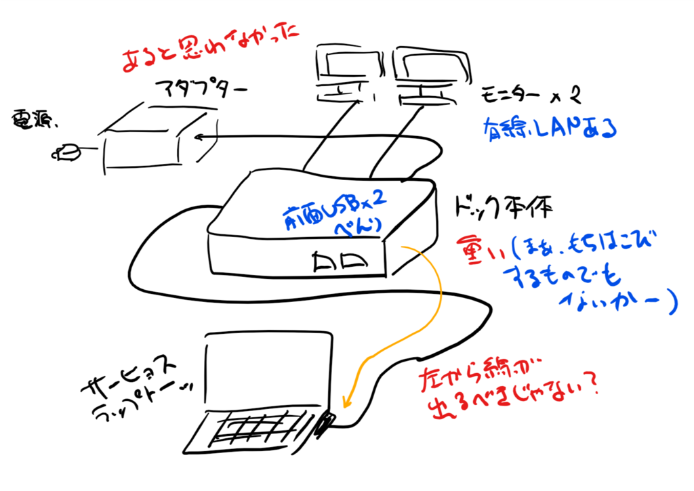

Surface Dock に USB 機器を接続しても認識されない
公開日：

実家（千葉）で使っていた Surface Dock を ゆうパック（こわれもの扱い）で愛媛へ送り、モニターや USB 機器（キーボードとマウス）を接続したのだが、反応がない。何度か抜き差しするうちにモニターの方は繋がったのだけど、USB 機器に関してはダメだった。給電はされるものの（スマートフォンの充電などは可能）、OS から認識はされない。
マイクロソフト コミュニティを覗いてみたところ同様のトラブルが報告されていたが、根本的な解決は示されていなかった。
キーボードは Surface Book 2 本体の USB ポートに挿し、マウスは Bluetooth 接続のものを使うことで、とりあえずは問題を回避できているけれど……困ったことだ。
ちなみに、買ったのは 2017/8/18 らしい。1年半でダメになるなら、少し高い買い物（定価 27,432 円）だなと思う。